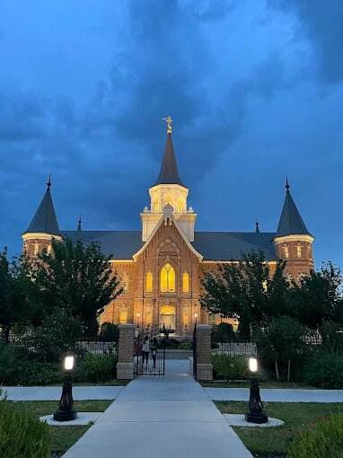

Temple Album
Home
Old
New
Large
Small
Temple Album
São Paulo Brazil Temple

Provo City Center Temple
Salt Lake Temple
Rome Italy Temple
Paris France Temple
Mesa Arizona Temple
Curitiba Brazil Temple
Campinas Brazil Temple
Washington D.C. Temple